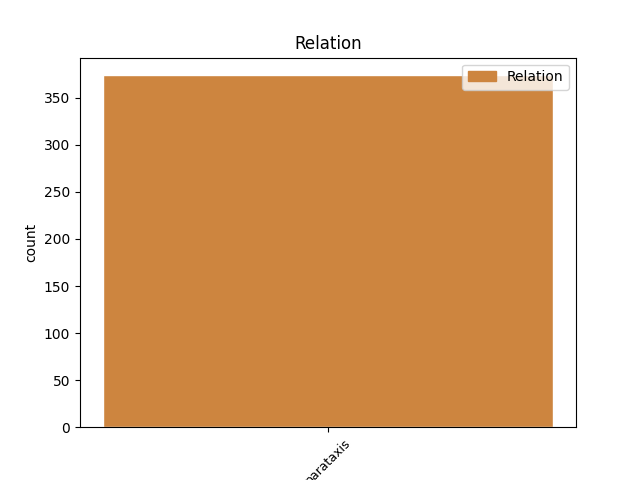
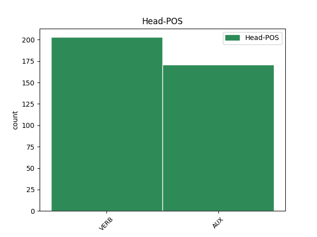
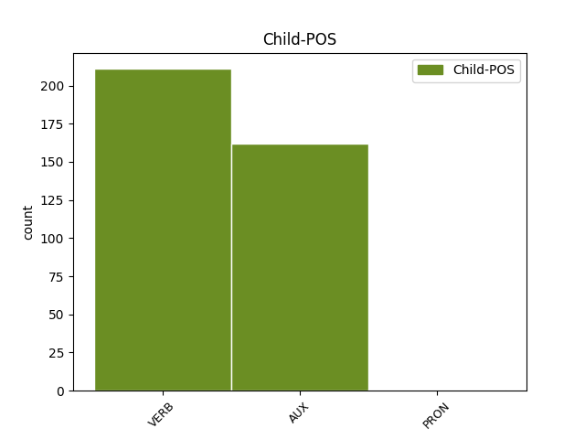

Distribution of features within this leaf



Agreement Rules sorted by frequency.
- When the dependent token is the parataxis(parataxis) of the head token, and the head token is VERB
1 ja _ _ _ _ 0 _ _ _
2 pač _ _ _ _ 0 _ _ _
3 res _ _ _ _ 0 _ _ _
4 je biti VERB Va-r3s-n Mood=Ind|Number=Sing|Person=3|Polarity=Pos|Tense=Pres|VerbForm=Fin 0 _ _ _
5 ful _ _ _ _ 0 _ _ _
6 ji _ _ _ _ 0 _ _ _
7 hitro _ _ _ _ 0 _ _ _
8 pride priti VERB Vmer3s Aspect=Perf|Mood=Ind|Number=Sing|Person=3|Tense=Pres|VerbForm=Fin 4 parataxis _ msd=Ggdste|word=pride
1 reklamo _ _ _ _ 0 _ _ _
2 sem biti AUX Va-r1s-n Mood=Ind|Number=Sing|Person=1|Polarity=Pos|Tense=Pres|VerbForm=Fin 0 _ _ _
3 videla _ _ _ _ 0 _ _ _
4 nisem biti AUX Va-r1s-y Mood=Ind|Number=Sing|Person=1|Polarity=Neg|Tense=Pres|VerbForm=Fin 2 parataxis _ msd=Gp-spe-d|word=nisn
5 pa _ _ _ _ 0 _ _ _
6 še _ _ _ _ 0 _ _ _
7 pila _ _ _ _ 0 _ _ _
Disagree Examples:
1 tako _ _ _ _ 0 _ _ _
2 [name:personal] _ _ _ _ 0 _ _ _
3 je biti AUX Va-r3s-n Mood=Ind|Number=Sing|Person=3|Polarity=Pos|Tense=Pres|VerbForm=Fin 0 _ _ _
4 na _ _ _ _ 0 _ _ _
5 tablo _ _ _ _ 0 _ _ _
6 dokončal _ _ _ _ 0 _ _ _
7 ste biti AUX Va-r2p-n Mood=Ind|Number=Plur|Person=2|Polarity=Pos|Tense=Pres|VerbForm=Fin 3 parataxis _ msd=Gp-sdm-n|word=ste
8 pogledali _ _ _ _ 0 _ _ _
9 preverili _ _ _ _ 0 _ _ _
10 svoje _ _ _ _ 0 _ _ _
11 rezultate _ _ _ _ 0 _ _ _
12 ? _ _ _ _ 0 _ _ _
13 … _ _ _ _ 0 _ _ _
14 a _ _ _ _ 0 _ _ _
15 je _ _ _ _ 0 _ _ _
16 [name:personal] _ _ _ _ 0 _ _ _
17 prav _ _ _ _ 0 _ _ _
18 naredil _ _ _ _ 0 _ _ _
19 ? _ _ _ _ 0 _ _ _
20 prav _ _ _ _ 0 _ _ _
21 [gap] _ _ _ _ 0 _ _ _
22 sistematično _ _ _ _ 0 _ _ _
23 to _ _ _ _ 0 _ _ _
24 tako _ _ _ _ 0 _ _ _
25 kot _ _ _ _ 0 _ _ _
26 je _ _ _ _ 0 _ _ _
27 [gap] _ _ _ _ 0 _ _ _
1 smo biti AUX Va-r1p-n Mood=Ind|Number=Plur|Person=1|Polarity=Pos|Tense=Pres|VerbForm=Fin 0 _ _ _
2 dogovorjeni _ _ _ _ 0 _ _ _
3 tako _ _ _ _ 0 _ _ _
4 da _ _ _ _ 0 _ _ _
5 boste biti AUX Va-f2p-n Mood=Ind|Number=Plur|Person=2|Polarity=Pos|Tense=Fut|VerbForm=Fin 1 parataxis _ msd=Gp-pdm-n|word=boste
6 sami _ _ _ _ 0 _ _ _
7 preverili _ _ _ _ 0 _ _ _
8 če _ _ _ _ 0 _ _ _
9 že _ _ _ _ 0 _ _ _
10 znate _ _ _ _ 0 _ _ _
11 zapisati _ _ _ _ 0 _ _ _
12 izraz _ _ _ _ 0 _ _ _
13 po _ _ _ _ 0 _ _ _
14 besedilu _ _ _ _ 0 _ _ _
1 ja _ _ _ _ 0 _ _ _
2 upam _ _ _ _ 0 _ _ _
3 da _ _ _ _ 0 _ _ _
4 boste biti AUX Va-f2p-n Mood=Ind|Number=Plur|Person=2|Polarity=Pos|Tense=Fut|VerbForm=Fin 0 _ _ _
5 tudi _ _ _ _ 0 _ _ _
6 vi _ _ _ _ 0 _ _ _
7 kdaj _ _ _ _ 0 _ _ _
8 prišli _ _ _ _ 0 _ _ _
9 eee _ _ _ _ 0 _ _ _
10 na _ _ _ _ 0 _ _ _
11 svoj _ _ _ _ 0 _ _ _
12 račun _ _ _ _ 0 _ _ _
13 v _ _ _ _ 0 _ _ _
14 naših _ _ _ _ 0 _ _ _
15 nagradnih _ _ _ _ 0 _ _ _
16 igrah _ _ _ _ 0 _ _ _
17 no _ _ _ _ 0 _ _ _
18 saj _ _ _ _ 0 _ _ _
19 že _ _ _ _ 0 _ _ _
20 danes _ _ _ _ 0 _ _ _
21 začenjamo začenjati VERB Vmpr1p Aspect=Imp|Mood=Ind|Number=Plur|Person=1|Tense=Pres|VerbForm=Fin 4 parataxis _ msd=Ggnspm|word=začenjamo
22 eno _ _ _ _ 0 _ _ _
23 novo _ _ _ _ 0 _ _ _
24 ne _ _ _ _ 0 _ _ _
1 eee _ _ _ _ 0 _ _ _
2 malo _ _ _ _ 0 _ _ _
3 smo biti AUX Va-r1p-n Mood=Ind|Number=Plur|Person=1|Polarity=Pos|Tense=Pres|VerbForm=Fin 0 _ _ _
4 že _ _ _ _ 0 _ _ _
5 peli _ _ _ _ 0 _ _ _
6 je biti AUX Va-r3s-n Mood=Ind|Number=Sing|Person=3|Polarity=Pos|Tense=Pres|VerbForm=Fin 3 parataxis _ msd=Gp-ste-n|word=je
7 bila _ _ _ _ 0 _ _ _
8 tako _ _ _ _ 0 _ _ _
9 navdušena _ _ _ _ 0 _ _ _
1 eee _ _ _ _ 0 _ _ _
2 pol _ _ _ _ 0 _ _ _
3 smo _ _ _ _ 0 _ _ _
4 danes _ _ _ _ 0 _ _ _
5 smo biti AUX Va-r1p-n Mood=Ind|Number=Plur|Person=1|Polarity=Pos|Tense=Pres|VerbForm=Fin 0 _ _ _
6 pri _ _ _ _ 0 _ _ _
7 maši _ _ _ _ 0 _ _ _
8 peli _ _ _ _ 0 _ _ _
9 smo _ _ _ _ 0 _ _ _
10 jo _ _ _ _ 0 _ _ _
11 povabili _ _ _ _ 0 _ _ _
12 zraven _ _ _ _ 0 _ _ _
13 pol _ _ _ _ 0 _ _ _
14 je biti AUX Va-r3s-n Mood=Ind|Number=Sing|Person=3|Polarity=Pos|Tense=Pres|VerbForm=Fin 5 parataxis _ msd=Gp-ste-n|word=je
15 pa _ _ _ _ 0 _ _ _
16 rekla _ _ _ _ 0 _ _ _
17 ja _ _ _ _ 0 _ _ _
18 bom _ _ _ _ 0 _ _ _
19 prišla _ _ _ _ 0 _ _ _
20 pol _ _ _ _ 0 _ _ _
21 mi _ _ _ _ 0 _ _ _
22 je _ _ _ _ 0 _ _ _
23 pa _ _ _ _ 0 _ _ _
24 danes _ _ _ _ 0 _ _ _
25 malo _ _ _ _ 0 _ _ _
26 pred _ _ _ _ 0 _ _ _
27 mašo _ _ _ _ 0 _ _ _
28 mi _ _ _ _ 0 _ _ _
29 je _ _ _ _ 0 _ _ _
30 sporočilo _ _ _ _ 0 _ _ _
31 poslala _ _ _ _ 0 _ _ _
32 da _ _ _ _ 0 _ _ _
33 nekaj _ _ _ _ 0 _ _ _
34 vmes _ _ _ _ 0 _ _ _
35 prišlo _ _ _ _ 0 _ _ _
36 in _ _ _ _ 0 _ _ _
37 ne _ _ _ _ 0 _ _ _
38 more _ _ _ _ 0 _ _ _